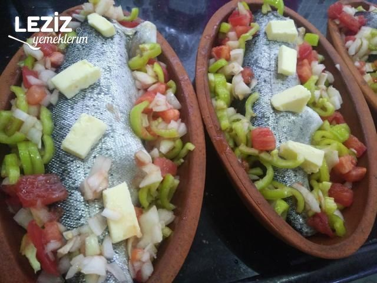
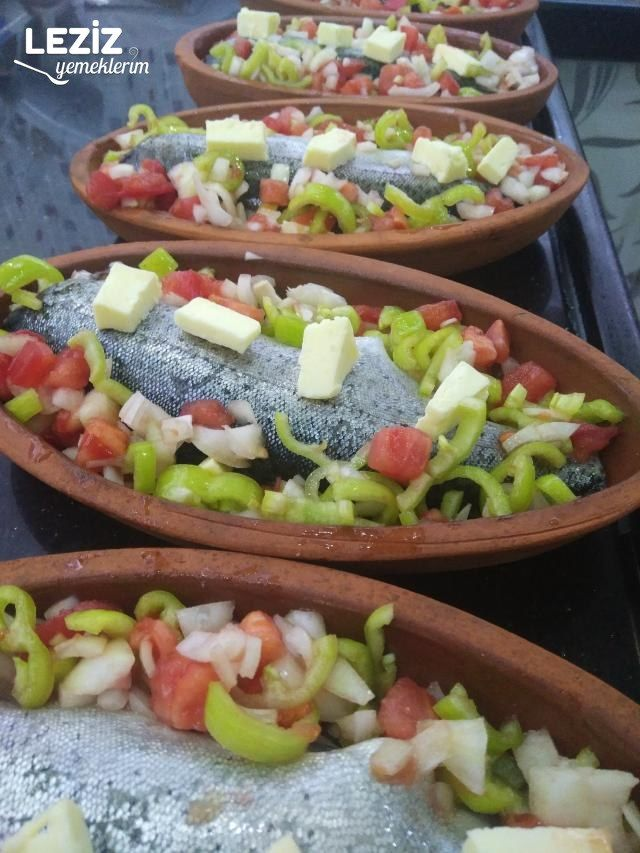
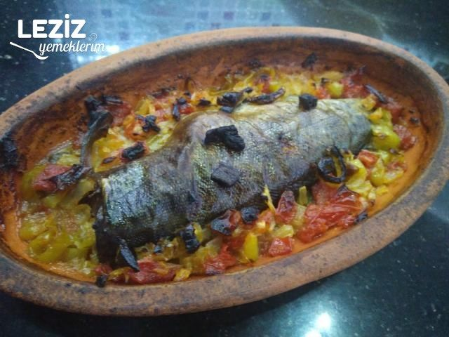

Güveçte Alabalık
1-2 Kişilik
5dk Hazırlık, 50dk Pişirme
Malzemeler
- 1 Alabalık
- 1 Soğan
- 4 Diş sarımsak
- 7-8 adet çeri domates
- 1 adet yeşil biber
- 3 yemek kaşığı zeytinyağı
- 2 yemek kaşığı tereyağı
- Tuz
Nasıl yapılır?
- Orta boydaki alabalığı temizlendikten sonra üzerine çizik atıp kafasını kesiyoruz (güvece sığdırabiliyorsanız gerek yok).
- Tuzluyoruz, güveç kabına yerleştirip yarım halka doğradığımız soğanların birazını içine kalanını ve kalan bütün malzemeleri balığın etrafına diziyoruz.
- Tekrar tuzlayıp zeytinyağını gezdiriyoruz. Üzerini folyolayıp birkaç tane hava deliği açıp önceden ısıttığımız 200 derece fırına veriyoruz.
- Yarım saat sonra folyoyu açıp tekrar pişmeye bırakıyoruz.
- Son 10 dakika güvecin içine tereyağını bırakıp pişme süresinin tamamlanmasını bekliyoruz.
- Suyu ve tereyağıyla birlikte enfes oluyor. Kişi başı 1 güveç önerilir.
Örnek
-

-

-

Kaynak
Fırında Alabalık